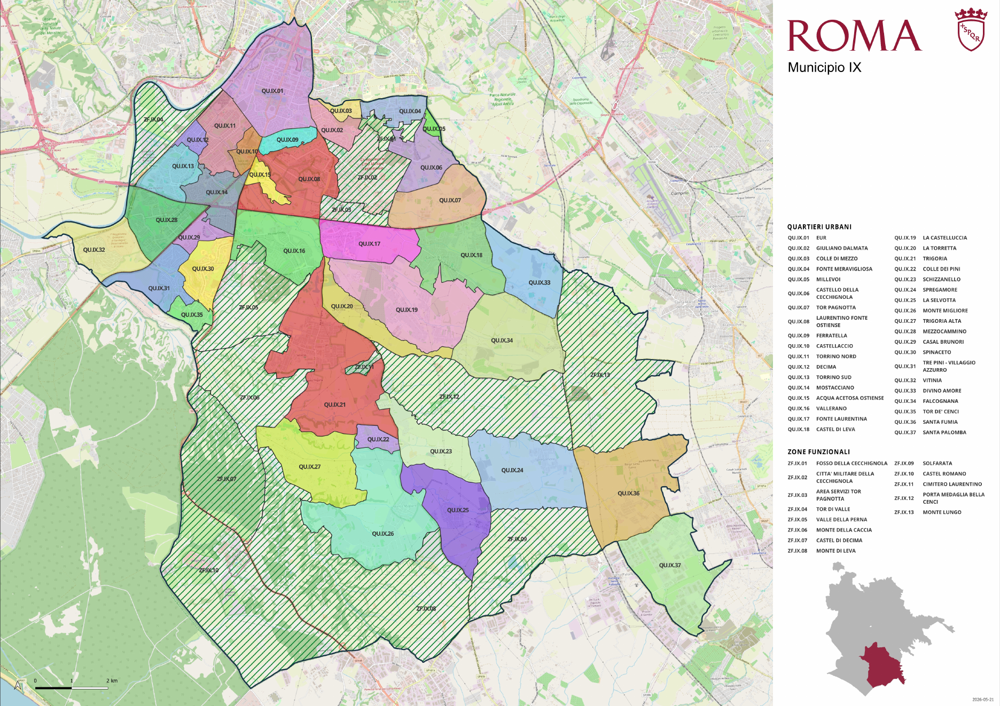

RETE SEGGI FDI
IX Municipio Roma
Dashboard elettorale
Accesso coordinamento
Usa la stessa password della Dashboard coordinamento.
Avanzamento scrutinio
0% Ricevute 0 Mancanti 0
Ultimi invii
Top sezioni FdI
Sezioni mancanti
0Mappa ufficiale Municipio IX
Mappa operativa con 38 plessi geocodificati, stato degli invii, ricerca per sezione e posizione del coordinatore. La mappa ufficiale resta disponibile come fallback.

Mappa ufficiale di fallback. La vista interattiva usa esclusivamente coordinate verificate dei plessi.
Sezioni e plessi elettorali
Archivio territoriale
| Sezione | Indirizzo del seggio | CAP | Vie assegnate | Stato |
|---|---|---|---|---|
| Caricamento archivio territoriale… | ||||
Classifiche FdI
Confronto per sezione sui voti validi.
Migliori sezioni
Sezioni da analizzare
DOSSIER ELETTORALE
Report finale - Elezioni amministrative
Riepilogo del Municipio IX, risultati FdI, sezioni e plessi.
Premi “Genera anteprima” per creare il report.